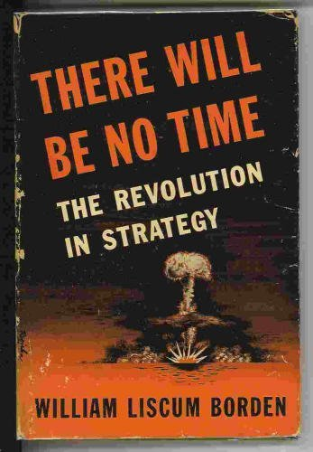

08-14-2012 8:55AM (ET)

On my way home from work I came across of number of military books put out for garbage collection. Among the discarded books was a book published in 1946 on the strategy of nuclear war called "There Will Be No Time: The Revolution in Strategy" by William Borden1. This book anticipates paranoia and spirit of the cold war ("We must think unthinkable thoughts and do unthinkable deeds and our enemies are preparing to do worse to us."). Now 50 some odd years later what did Borden get right, what did he get wrong.
His main claim is that nuclear wars are purely tactical rather than strategic. What he means by this is that an attacker in a nuclear war must choose between destroying strategic targets like cities or tactical targets like nuclear missile launchers and nations will choose tactical targets rather than strategic targets. This distinction later came to be referred to as countervalue (enemy cities) vs counterforce (enemy missile bases). His argument rests of the following claims:
Furthermore he argues that since a nuclear war is not about destroying cities but about destroying weapons, a nation that hopes to win must have as many weapons as possible (the side that runs out of weapons loses). Thus, a nuclear deterrence strategy around having enough nuclear weapons to destroy all the enemies cities will not work because the targets will be missile bases not cities (if you fire all your missiles at cities, the enemy wins since you are disarmed and they have a full stockpile of nuclear weapons). This is directly opposed to the argument made by Bernard Brodie in 'The Absolute Weapon' that no one can win a nuclear war, rather they can be averted by establishing a credible deterrent (aimed at an enemies cities).
>"Thus far the chief purpose of our military establishment has been to win wars. From now on its chief purpose must be to avert them. It can have almost no other useful purpose." Bernard Brodie
Borden takes an extremely rationalist game playing approach to strategy that completely ignores human psychology. Brodie understands that emotions are extremely important in war and the strategy of war6. We do not know absolutely if Brodie is right or if in fact Borden is right, but it seems that a counter-value deterrence was a far more successful strategy than Borden anticipated. Also modern simulations and predictions about Nuclear War look much more like Brodie argued.4
Additionally Borden believed that all future wars that involved nuclear powers would be nuclear wars and therefore conventional military units would be worst than useless since they would divert money from nuclear weapons research and production. This turns out not to be the case.
I haven't read much Nuclear Strategy from this time period, so I can not say if this book is merely reporting on what military planners knew at the time2 or if Borden is truly blazing a path. Regardless, 'There Will Be No Time' makes some incredible predictions:
>"The time to attack is not after the aggressor's diplomats have walked out of the United Nations but after speeches in which they have praised it and declared that nations cooperate or perish." Borden - 'There Will Be No Time'.
The first half of the book is fairly rational in terms of it's analysis of how nuclear weapons would likely be used. The second half of the book is dedicated to an extreme form of cold-war paranoia. He argues that since the US can not know the motivations of foreign governments and the suprise is key to a nuclear attack, we can not tell if gestures of peace are made in good faith or merely to get the US to let it's guard down, thus nations that preach peace are likely planning the nuclear annihilation of the US. I suspect that this paranoia comes from his immediate experiences with the Axis power's willingness to attack allies while still under the banner of peace (The term "Atomic Pearl Harbor" is used countless times).
Nuclear War Prevention: "One World or None" circa 1950 National Committee on Atomic Information
>"It is reasonable to suppose that peace will replace anarchy among nations only when an inclusive world state monopolizes all power and is therefore able to discipline each individual man or any combination of men. Such a global state could tolerate no armed force loyal to any other authority other than itself, and it might even supervise and control local policemen. Only thus can present-day nation-states assure peace within their respective borders." Borden - 'There Will Be No Time'.
The most interesting thing reading this book was his advocacy for a one world state. I had assumed that such ideas were as unpopular in 1946 as they are now (ZOMG UN black helicopters), but I have subsequently read several other position papers from that time period and it appears that calls for a global authority with an absolute monopoly on nuclear weapons was quite common3. As far as nuclear strategy is concerned Borden doesn't think a world government is likely before another world war and so dismisses it as a possible achievable means for peace.
'There Will Be No Time' is an interesting artifact from the past. It succeeds in it technical predictions but it's prescriptive strategy is misses the mark because it assumes that nations will obey the rules of high-reason rather common human psychology.
A mistake that would be made many times by later thinkers such as Herman Kahn.
It's simple in its language and not badly written, but some of the themes repeat themselves.
It also has uncomfortable reference to various races (usually used to represent nationalities), yellow peril, and cold war everyone-is-a-spy paranoia that is to be expected from a book of this time period written by a member of the US government (consider that the US government just carried out the Japanese American Internment).
Overall an worthwhile read if you are interested in the history of the development of US nuclear strategy.
While researching this book I couldn't find much collected information on William Liscum Borden so I have collected various facts and recollections here:
>'The man who provided the argument and the occasion was William Liscum Borden, a single-minded young zealot who thought he knew why Oppenheimer resisted Air Force demands for hydrogen bombs—”more probably than not,” Borden wrote the head of the FBI in November 1953, “J. Robert Oppenheimer is an agent of the Soviet Union.”' An American Tragedy - The Atlantic
For the more conspiracy minded:
>"Oppenheimer was targeted by the coal and big oil companies who were scared to death that he'd undermine their profits with cheap nuclear energy. So they used the testimony of Kenneth Pitzer and William Liscum Borden to ruin his credibility with the help of Joseph McCarthy's Red Scare. They branded Oppy a communist. That saved their asses, but they saw a new opportunity to use our irrational fear of atomic bombs to get us all to shell out the bucks," Death Bed Confession Sheds New Light on Atomic White Wash.
>Another alarmed and influential participant that winter and spring of 1949 was a twenty-eight-year-old Yale College and Yale Law graduate and former bomber pilot named William Liscum Borden — a small man with a square jaw, blond, with blue eyes. Bright, ardent and Utopian, Borden had been an isolationist who had converted to interventionism shortly before Pearl Harbor. He had enlisted in the US Army immediately after graduation in 1942, volunteering to fly bombers, and saw three years’ service flying out of England with the Eighth Air Force. He had lost a college roommate and a relative to the war. Of the “men who died,” he wrote angrily in the months after victory, “many of them would be alive today had a little more honest realism been displayed before Pearl Harbor.” The honest realism Borden had in mind was “to think realistically about the worst that could befall as well as the best.” He had seen a V-2 rocket “streaming red sparks and whizzing past us” on its way to London one night in 1944 when he was returning in his B-24 from a mission to Holland. Hiroshima had a further “galvanic effect,” he said later, and he had “decided instantly that this was the most important thing in the world.” Between his military discharge and his entry into law school, Borden began writing a book that would “think straight about the strategic implications of the new weapons.” He called it, urgently, There Will Be No Time.
>[..]
>Borden published There Will Be No Time to modest sales in 1946. After graduating from law school the following year, he returned to Washington, where his family lived, to work for the Justice Department. From there, it seems, pursuing his Utopian visions, he and two law school classmates wrote Brien McMahon an alarming letter. They named it “the Inflammatory Document,” as if they were christening a new bomber; it proposed that the United States should take advantage of its atomic monopoly while that monopoly still existed and simply give Stalin a nuclear ultimatum: “Let Stalin decide — atomic peace or atomic war.” McMahon was Borden's parents’ neighbor; the putative author of the Atomic Energy Act took Borden to lunch, rejected the young lawyer's Churchillian brinkmanship but tendered him a job as legislative assistant. Borden joined McMahon's Senate staff in August 1948. Congress went Democratic in the November elections that year and McMahon replaced Bourke Hickenlooper as chairman of the Joint Committee on Atomic Energy. Jn January 1949, the former bomber pilot who believed that only massive atomic strength could delay war with the Soviet Union became executive director of the Congressional committee that oversaw the development and production of the United States's atomic arsenal. Dark Sun: The Making of the Hydrogen Bomb
There were a few reviews after he published and a review by crisisofenclosure in 2010. ↩
The book is more than just Borden's ideas as much of the book is based on congressional testimony on Nuclear War given after the atomic bombing of Hiroshima and Nagasaki. ↩
See Robert C. Tucker's 'No First Use of Nuclear Weapons: A Proposal'(1963) or 'One World or None: A Report to the Public on the Full Meaning of the Atomic Bomb' (1946). The World Government has been in the public consciousness since before the 1930's with H.G. Wells 'The Shape of Things to Come'(1933) and Olaf Stapledon's fantastic book 'Last and First Men' (1930). ↩
For a game which illustrates the countervalue/counterforce dilemma check out 'Defcon: Everybody Dies' by introversion software. It has several point scoring systems that model either Borden ideas (counterforce) or Brodies ideas (countervalue). See the manual for the score modes. ↩
The Germans were attempting to launch V-2's for their submarines, so it was not an unheard of idea but Ballistic missile submarines were not a reality until 1959 with the Soviet R-13. ↩
Clausewitz agrees with Brodie, which makes sense since Brodie was well read in Clausewitz. In fact it might make more sense to say Brodie agreed with Clausewitz. Certainly the connection has been made between them more than once. >"[..] it would be an obvious fallacy to imagine war between civilized people as resulting merely from a rational act on the part of the governments and to conceive of war as gradually ridding itself of passion, so that in the end one would never really need to use the physical impact of the fighting forces - comparative figures of their strength would be enough. That would be a kind of war by algebra. > Theorists were already beginning to think along such lines when the recent wars taught them a lession. If war is an act of force, the emotions can not fail to be involved." Clausewitz On War' ↩